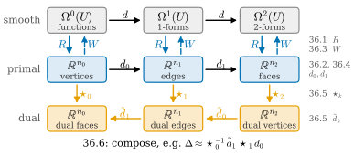
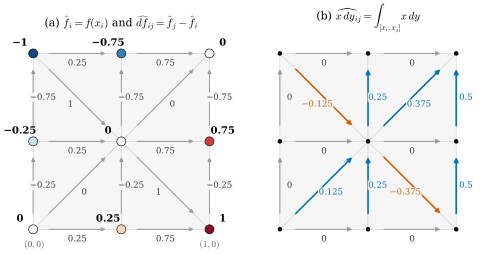
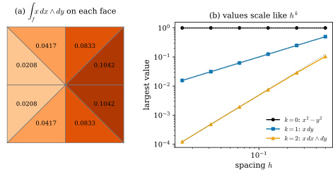

36.1 Discretization: The de Rham Map
Goals
- smooth form과 mesh 위의 유한한 수 사이를 오가는 두 방향(discretization과 interpolation)을 구분하고, discrete exterior calculus의 기본 연산(\(d\), \(\star\), 그 합성)이 이 장의 어디에서 나오는지 말할 수 있다.
- de Rham map을 정의하고, 0-form, 1-form, 2-form의 de Rham image를 계산할 수 있다.
- simplex의 orientation을 뒤집으면 값의 부호가 바뀜을 증명하고, discrete \(k\)-form을 \(\R^{n_k}\)의 vector로 저장하는 규약을 쓸 수 있다.
- discrete form의 값이 점마다의 값이 아니라 simplex 위에서 적분한 양이라는 것을 설명할 수 있다.
Prerequisites
- Definition 33.1.15: simplicial complex, Definition 33.3.2: oriented simplex, Example 33.3.12: face list가 정하는 orientation
- Definition 35.3.4: line integral, (35.3.6)와 Proposition 35.3.12: simplex 위의 적분, Remark 35.3.14: 점 위의 적분
- Proposition 35.4.6: fundamental theorem for line integrals
- Proposition 34.5.5: \(\R^3\)의 2-form과 vector의 대응 \((w_{yz}, w_{zx}, w_{xy})\)
Motivation
Chapter 35는 \(\R^n\)의 open set 위에서 differential form, exterior derivative \(d\), 적분, Stokes's theorem, Hodge star \(\star\), codifferential \(d^*\)를 세우고 “다음 장에서는 이 모든 연산을 mesh 위로 옮긴다”는 예고로 끝났다(Section 35.5). 그 예고를 실행하려면 먼저 답해야 할 질문이 있다. 평면의 1-form \(\alpha = P\,dx + Q\,dy\)는 점마다 수 두 개, 곧 무한히 많은 수다. vertex \(n_0\)개, edge \(n_1\)개, triangle \(n_2\)개인 mesh에는 유한한 수만 저장할 수 있다. 어떤 수를 저장해야 하는가?
첫 번째 후보는 vertex마다 coefficient를 sampling하는 것, 곧 \((P(x_i), Q(x_i))\)를 저장하는 것이다. 이 방식에는 두 가지 문제가 있다. 저장한 수가 좌표축의 선택에 따라 바뀌고, 무엇보다 \(d\alpha = (\partial_xQ - \partial_yP)\,dx\wedge dy\)를 계산하려면 partial derivative가 필요한데 sample에는 partial derivative가 없다. 차분으로 근사할 수밖에 없다. 두 번째 후보는 적분값을 저장하는 것이다. edge마다 \(\int_e\alpha\)를, triangle마다 \(\int_f\omega\)를 저장한다. 그러면 (35.4.4)가 \(\int_fd\alpha\)를 세 edge의 저장값의 합으로 정확히 준다. discrete exterior calculus(DEC)는 이 두 번째 길을 택한다 [Desbrun05], [Hirani03].
이 절은 그 저장 방식, 곧 de Rham map을 정의한다. 이 장의 나머지가 무엇을 하는지는 Figure 36.1.1이 한 장으로 보여 준다.
The Map of This Chapter

Figure 36.1.1을 위에서 아래로 읽어 보자. 맨 위 줄의 \(\Omega^k(U)\)는 Chapter 35의 smooth form이다. 파란 화살표 \(R\)을 따라 내려가면 가운데 줄, 곧 mesh 위의 수의 배열이 된다. 이것이 이 절의 de Rham map이다. 점선 \(W\)는 거꾸로 수의 배열에서 form을 다시 만드는 interpolation이고 Section 36.3에서 다룬다. 가운데 줄의 \(d_0, d_1\)은 Stokes's theorem에서 나오는 행렬이다(Section 36.2, Section 36.4). 여기까지는 mesh의 조합 구조와 vertex의 위치만 쓴다. 길이와 넓이는 가운데 줄에서 아래 줄로 내려가는 \(\star_k\)에서 처음 등장한다(Section 36.5). 마지막으로 Section 36.6은 화살표를 이어 gradient, divergence, curl, Laplacian을 만든다. 그림 맨 아래의 식이 그 한 예다.
Discretization and Interpolation
smooth 대상과 discrete 대상 사이에는 두 방향의 다리가 필요하다. discretization(이산화)은 smooth 대상에서 유한한 측정값을 뽑는 일이고, interpolation(보간)은 유한한 측정값에서 그 값들을 다시 내는 smooth(또는 조각마다 smooth) 대상을 만드는 일이다. 함수(0-form)에서는 둘 다 익숙하다. vertex에서 값을 읽는 것이 discretization이고, 삼각형마다 linear하게 이어 붙이는 것이 interpolation이다(Section 31.3). 두 일은 서로 역이 아니다. interpolation한 뒤 다시 측정하면 원래 값이 나오지만, 측정한 뒤 interpolation하면 원래 함수와 다른 것이 나온다. 같은 비대칭이 \(k\)-form에서도 나타난다(Section 36.3).
이 장에서 \(\mathcal{K}\)는 \(\R^N\)(예제에서는 \(N = 2\) 또는 \(3\)) 안의 simplicial complex(Definition 33.1.15)이고, \(U\)는 \(\abs{\mathcal{K}}\)(simplex들의 합집합)를 품는 open set이다. \(\mathcal{K}\)에는 face list의 orientation(Example 33.3.12, Notation)을 준다.
- vertex \(i\)는 \(+[x_i]\)이다.
- edge \(\{i, j\}\)(\(i \lt j\))는 \([i, j]\), 곧 \(i \to j\) 방향이다. edge의 번호는
dgdec.edge_list의 사전식 순서다. - triangle은 face list \(F\)의 행의 순서 \([i, j, k]\)로 orient하고, 행 번호로 번호를 매긴다. 평면 mesh는 반시계 방향, 닫힌 mesh는 바깥쪽이다.
\(n_k\)는 \(k\)-simplex의 수다. curved surface mesh도 \(\R^3\)의 complex이므로, 여기서 다루는 form은 둘러싼 공간 \(\R^3\)의 open set 위의 form이다. surface 자체에만 정의된 form은 Chapter 38에서 다룬다.
The de Rham Map
Definition 36.1.1 (de Rham map). \(\mathcal{K}\)가 위의 oriented simplicial complex이고 \(0 \le k \le \dim\mathcal{K}\)이며 \(\alpha\)가 \(U\) 위의 continuous \(k\)-form이라 하자. oriented \(k\)-simplex \(\sigma\)마다
로 정한 vector \(\hat\alpha \in \R^{n_k}\)를 \(\alpha\)의 de Rham image라 하고, linear map \(R_k\colon \alpha \mapsto \hat\alpha\)를 de Rham map(드람 사상)이라 한다. \(k\)가 분명하면 \(R\)로 쓴다. 적분은 \(k \ge 1\)이면 vertex 순서의 affine parametrization (35.3.6)으로, \(k = 0\)이면 Remark 35.3.14로 정한다.
세 degree를 풀어 쓰면 다음과 같다(\(\Delta^2\)는 standard 2-simplex).
여기서 \(\gamma(t) = x_i + t(x_j - x_i)\), \(p(s, t) = x_i + s(x_j - x_i) + t(x_k - x_i)\)이다. 0-form에서는 point sample과 적분값이 같다. 1-form은 edge 방향의 vector를 넣은 값을 edge를 따라 더한 것, 곧 edge를 따라 흐르는 총량이다. 2-form은 triangle의 두 edge vector를 넣은 값을 triangle 위에서 더한 것이다. coefficient가 다항식이면 degree에 맞는 Gauss quadrature로 오차 없이 계산할 수 있고, dgdec.derham0, derham1, derham2가 그렇게 한다.
Example 36.1.2 (a planar grid).
unit square를 vertex \(3\times 3\)개, 간격 \(\tfrac12\)로 나누고 대각선을 번갈아 그은 mesh(dgmesh.grid_mesh)를 쓰자. vertex \(3a + b\)는 \((a/2, b/2)\)에 있고, triangle 8개는 모두 반시계 방향이며, edge 16개는 \([0,1], [0,3], [0,4], [1,2], \dots, [7,8]\)의 순서다.
- (a) 0-form \(f = x^2 - y^2\)의 de Rham image는 vertex 값의 vector \(\hat f\) \(= (0, -0.25, -1, 0.25, 0,\) \(-0.75, 1, 0.75, 0)\)이다.
- (b) \(df = 2x\,dx - 2y\,dy\)의 de Rham image는 Proposition 35.4.6에 의해 \(\widehat{df}_{[i,j]} = f(x_j) - f(x_i) = \hat f_j - \hat f_i\)이다. 예를 들어 \(\widehat{df}_{[0,1]} = -0.25,\) \(\widehat{df}_{[2,4]} = 0 - (-1) = 1,\) \(\widehat{df}_{[4,8]} = 0 - 0 = 0\)이다.
- (c) 1-form \(x\,dy\): edge \([i, j]\) 위에서 integrand \(x(t)\,(y_j - y_i)\)는 \(t\)의 linear 함수이므로 적분은 중점 값과 같다: \(\widehat{x\,dy}_{[i,j]} = \tfrac{x_i + x_j}{2}(y_j - y_i)\). 가로 edge에서는 \(0\)이고, 세로 edge \([7, 8]\)(\(x = 1\))에서는 \(0.5\), 대각선 \([4, 8]\)에서는 \(0.75\cdot 0.5 = 0.375\), 대각선 \([2, 4]\)(\((0, 1) \to (0.5, 0.5)\))에서는 \(0.25\cdot(-0.5) = -0.125\)이다.
- (d) 2-form \(x\,dx\wedge dy\): triangle \([4, 7, 8]\)은 넓이 \(\tfrac18\)인 반시계 방향 triangle이고 integrand \(x\)가 linear이므로 적분은 넓이 \(\times\) 무게중심에서의 값 \(= \tfrac18\cdot\tfrac{0.5 + 1 + 1}{3} = \tfrac{5}{48} \approx 0.1042\)이다. 같은 이유로 \(dx\wedge dy\)의 de Rham image는 모든 face에서 \(\tfrac18\)이다.
Verification: verify/v-36-1-de-rham-map.py

Figure 36.1.2의 (a)에서 가운데 vertex 4(값 \(0\))와 왼쪽 위 vertex 2(값 \(-1\))를 잇는 대각선을 보자. 화살표는 번호가 작은 2에서 4로 가고, 그 옆의 숫자 \(1\)은 \(0 - (-1)\)이다. \(df\)의 적분이 끝점의 차이라는 사실(Proposition 35.4.6)이 모든 edge에서 이렇게 보인다. (b)에서는 같은 grid에 \(x\,dy\)를 적분했다. 가로 edge가 모두 회색 \(0\)인 것은 그 위에서 \(y\)가 변하지 않기 때문이고, 세로 edge의 값이 가운데 \(0.25\), 오른쪽 \(0.5\)로 커지는 것은 \(x\)가 커지기 때문이다. 대각선은 위로 가면 파랑, 아래로 가면 주홍이다. 화살표를 거꾸로 돌리면 모든 숫자의 부호가 바뀐다. 이것이 다음 명제다.
Example 36.1.3 (forms in space).
(a) dgmesh.icosphere(1)(vertex 42개, unit sphere 위)에서 높이 함수 \(z\)의 de Rham image \(\hat z\)는 vertex 높이의 vector이고, \(\widehat{dz}_{[i,j]} = z_j - z_i\)이다(Proposition 35.4.6). (b) Example 35.3.13(b)의 triangle \(\sigma = [x_0, x_1, x_2]\), \(x_0 = (1, 0, 0)\), \(x_1 = (0, 2, 0)\), \(x_2 = (0, 0, 1)\)에서 2-form \(\omega = z\,dx\wedge dy\)를 보자(Proposition 34.5.5의 vector로는 \(w = (0, 0, z)\)). (36.1.2)의 parametrization은 \((1 - s - t, 2s, t)\)이므로 \(z = t\)이고, \(dx\wedge dy(x_1 - x_0, x_2 - x_0)\) \(= (-1)(0) - (2)(-1)\) \(= 2\)이다. 따라서 \(\hat\omega_\sigma = \int_{\Delta^2}2t\,ds\,dt = 2\cdot\tfrac16 = \tfrac13\)이다. 같은 triangle에서 상수 form \(dx\wedge dy\)는 \(\tfrac12\cdot 2 = 1\)(그림자의 넓이)이었다.
Verification: verify/v-36-1-de-rham-map.py
Proposition 36.1.4 (linearity and orientation). Definition 36.1.1의 상황에서
- (a) \(R_k\)는 linear이다: \(\widehat{a\alpha + b\beta} = a\hat\alpha + b\hat\beta\).
- (b) \(k \ge 1\)이고 \(\sigma = [v_0, \dots, v_k]\)의 vertex를 permutation \(\pi\)로 바꾸어 늘어놓으면 적분은 \(\sgn\pi\)배가 된다. 특히 orientation을 뒤집은 \(-\sigma\)에서 \(\int_{-\sigma}\alpha = -\hat\alpha_\sigma\)이다.
- (c) \(k\)-simplex들의 orientation 선택을 바꾸는 것을 대각성분이 \(\pm 1\)인 대각행렬 \(P_k\)(뒤집은 simplex 자리가 \(-1\))로 나타내면, 새 선택에 대한 de Rham map은 \(P_kR_k\)이다.
Proof. (a) 적분 (36.1.2)의 integrand는 \(\alpha\)에 대해 linear이고 적분도 linear이다. (b) Proposition 35.3.12(c)이다. orientation을 뒤집는 것은 odd permutation 하나(예: 첫 두 vertex의 맞바꿈)이므로 \(\sgn = -1\)이다. (c) (b)를 성분마다 쓴 것이다. 뒤집은 \(\sigma\)의 성분만 \(-1\)배가 된다.
이 명제가 말하는 것. mesh는 simplex마다 orientation 하나에 대한 값만 저장하면 된다. 반대 orientation의 값은 부호를 바꿔 얻는다. 0-simplex에는 orientation \(+\)만 준다(Definition 33.3.11). (c)의 \(P_k\)는 Proposition 33.5.8에서 signed incidence matrix를 바꾼 것과 같은 행렬이고, 그래서 Section 36.4의 정리들은 orientation 선택에 무관하게 성립한다.
Non-example 36.1.5 (sampling instead of integrating). (a) edge의 중점 \(m_{ij}\)에서 잰 값 \(S(\alpha)_{[i,j]} := \alpha_{m_{ij}}(x_j - x_i)\)는 linear이고 orientation을 뒤집으면 부호가 바뀌지만 de Rham map이 아니다. coefficient가 affine이면 적분과 같지만(Example 36.1.2(c)) 일반적으로 다르다. \(f = x^3\)과 edge \([(0, 0), (1, 0)]\)에서 \(S(df) = 3\cdot(\tfrac12)^2 = \tfrac34\)인데 \(\int df = f(1) - f(0) = 1\)이다. 그래서 \(S\)로 저장하면 “\(df\)의 edge 값 = 끝점 값의 차이”가 깨지고, Section 36.4의 정확한 \(d\)를 잃는다. (b) vertex마다 coefficient의 쌍 \((P(x_i), Q(x_i))\)를 저장하는 것은 oriented simplex마다 수 하나가 아니라 vertex마다 수 둘이다. 좌표축을 \(90^\circ\) 돌리면 같은 1-form인데 저장한 수가 \((Q, -P)\)로 바뀐다. de Rham image는 vertex의 위치와 form만으로 정해지므로 좌표를 돌려도 같다.
Verification: verify/v-36-1-de-rham-map.py
Discrete Differential Forms
de Rham map은 smooth form에서 수의 배열을 만든다. 그러나 mesh 위의 계산은 대개 smooth form 없이 수의 배열에서 시작한다. vertex의 측정값, 다른 연산의 결과, 임의의 입력 등이다. 그래서 수의 배열 자체를 하나의 대상으로 정의한다.
Definition 36.1.6 (discrete differential form). oriented simplicial complex \(\mathcal{K}\)의 oriented \(k\)-simplex \(\sigma\)마다 실수 \(\alpha_\sigma\)를 주되 \(\alpha_{-\sigma} = -\alpha_\sigma\)를 만족하게 한 것을 \(\mathcal{K}\) 위의 discrete differential form(이산 미분형식), 짧게 discrete \(k\)-form이라 한다(\(k = 0\)이면 vertex마다 실수 하나이고 부호 조건은 없다). 각 \(k\)-simplex에서 face list가 정한 orientation(위의 규약)의 값만 모으면 vector \(\alpha \in \R^{n_k}\)를 얻고, 거꾸로 모든 vector가 discrete \(k\)-form을 하나 정한다.
저장 규약을 정리하면 다음과 같다(Notation, 정본은 tools/dgdec.py).
- discrete 0-form: \(\alpha \in \R^{n_0}\), 성분 \(i\)가 vertex \(i\)의 값이다.
- discrete 1-form: \(\alpha \in \R^{n_1}\), 성분 \(e\)가
edge_list의 \(e\)번째 행 \([i, j]\)(\(i \lt j\))의 값이다. \([j, i]\)의 값은 \(-\alpha_e\)이다. - discrete 2-form: \(\alpha \in \R^{n_2}\), 성분 \(f\)가 \(F\)의 \(f\)번째 행 \([i, j, k]\)의 값이다. vertex를 odd permutation으로 바꾼 순서의 값은 \(-\alpha_f\)이다.
기호의 약속. 임의의 discrete form은 \(\alpha \in \R^{n_k}\)처럼 모자 없이 쓰고, smooth form \(\alpha\)의 de Rham image만 \(\hat\alpha = R_k(\alpha)\)로 쓴다. 따라서 “\(\hat\alpha\)”라고 쓰면 그 수들이 어떤 smooth form의 적분값이라는 뜻이 함께 들어 있다.
Example 36.1.7 (discrete forms that are not given by a formula). (a) edge마다 아무 수나 적은 것, 예를 들어 Example 36.1.2의 grid의 edge 16개에 \(1, 2, \dots, 16\)을 적은 것도 discrete 1-form이다. (b) mesh의 vertex 위치 \(x_i \in \R^3\)는 성분마다 discrete 0-form이고, 셋을 묶어 \(\R^3\)-valued discrete 0-form이라 부른다. (c) edge vector \(x_j - x_i\)(edge \([i, j]\))는 \(\R^3\)-valued discrete 1-form이다. 이것은 vector-valued 1-form \(d\mathbf{x}\)(\(\mathbf{x}\colon U \to \R^3\)은 점을 자기 위치로 보내는 identity map, 곧 성분이 좌표 함수 \(x, y, z\)인 \(\R^3\)-valued 0-form)의 de Rham image이기도 하다: 성분마다 Proposition 35.4.6을 쓰면 \(\int_{[x_i, x_j]}d\mathbf{x} = x_j - x_i\)이다(Section 35.5의 Smooth vs. Discrete 상자). 곡선에서는 이것이 Chapter 37의 edge vector다(Proposition 37.4.1).
Non-example 36.1.8 (edge length). oriented edge마다 길이를 주는 함수 \(\ell([i, j]) := \abs{x_j - x_i}\)는 discrete 1-form이 아니다. \(\ell([j, i]) = \ell([i, j]) \gt 0\)이라 \(\alpha_{-\sigma} = -\alpha_\sigma\)를 어긴다. 길이는 방향이 없는 양이고, 어떤 1-form의 적분도 아니다(Non-example 35.3.7). 길이와 넓이는 discrete form의 값이 아니라, Section 36.5의 Hodge star 안에 coefficient로 들어간다.
Integrated Quantities
discrete form의 값은 점에서의 값이 아니라 simplex 위의 총량이다. 그래서 mesh를 세분하면 값 자체가 작아진다. 간격 \(h\)인 grid에서 edge의 길이는 \(h\) 정도, triangle의 넓이는 \(h^2\) 정도이므로, smooth form을 고정하고 \(h\)를 줄이면 1-form의 값은 \(h\)에, 2-form의 값은 \(h^2\)에 비례해 줄어든다. 0-form만 \(h\)와 무관하다.

Figure 36.1.3의 (a)를 보자. 8개의 triangle은 넓이가 모두 \(\tfrac18\)인데 적힌 값은 \(0.0208\)에서 \(0.1042\)까지 다섯 배 차이가 난다. 넓이로 나누면 \(\tfrac16, \tfrac13, \tfrac23, \tfrac56\), 곧 각 triangle의 무게중심의 \(x\)좌표가 된다. 값을 넓이로 나눠야 “점에서의 밀도”가 나온다는 뜻이다. (b)는 같은 일을 세분하면서 본다. 검은 선은 \(h\)를 바꿔도 \(1\)에 머물고, 파란 선은 \(h\)를 반으로 줄일 때마다 반으로, 주황 선은 \(\tfrac14\)로 줄어든다. 그래서 서로 다른 degree의 discrete form을 더하거나, 그 값을 그대로 함수값처럼 비교하는 것은 단위가 맞지 않는다. 적분값을 밀도로 바꾸고 다른 cell의 크기를 곱하는 일, 곧 길이와 넓이를 쓰는 변환이 Section 36.5의 Hodge star다.
Example 36.1.9 (what the de Rham map forgets). unit square를 간격 \(h = 1/n\)인 grid로 나누고 \(g(x, y) = \sin(\pi x/h)\sin(\pi y/h)\)라 하자. vertex는 \((ah, bh)\)(정수 \(a, b\))이므로 모든 vertex에서 \(g = 0\), 곧 \(\hat g = 0\)이다. 또 모든 edge에서 \(\widehat{dg}_{[i,j]} = g(x_j) - g(x_i) = 0\)이다(Proposition 35.4.6). 그러나 \(g \neq 0\)이고 \(dg \neq 0\)이다. 따라서 \(R_0\)과 \(R_1\)은 injective가 아니다. 일반적으로 \(\R^{n_k}\)는 finite-dimensional이고 continuous \(k\)-form의 공간은 그렇지 않으므로 de Rham map은 결코 injective가 아니다. 이 예는 그 kernel의 원소를 구체적으로 보여 준다. mesh보다 짧은 파장의 진동은 측정에 잡히지 않는다.
Verification: verify/v-36-1-de-rham-map.py
Summary
- smooth와 discrete 사이에는 discretization(측정)과 interpolation(복원)의 두 방향이 있고, 둘은 서로 역이 아니다. 이 장은 \(R\), \(W\), \(d_k\), \(\star_k\)와 그 합성을 차례로 만든다(Figure 36.1.1).
- de Rham map은 smooth \(k\)-form을 oriented \(k\)-simplex마다의 적분값 \(\hat\alpha_\sigma = \int_\sigma\alpha\)의 배열로 보낸다. 0-form은 vertex 값, 1-form은 edge를 따른 총량, 2-form은 triangle 위의 총량이다(Definition 36.1.1, (36.1.2)).
- \(R\)은 linear이고, orientation을 뒤집으면 값의 부호가 바뀐다(Proposition 36.1.4). 그래서 simplex마다 한 orientation의 값만 저장한다.
- discrete \(k\)-form은 oriented \(k\)-simplex마다의 실수이고 \(\R^{n_k}\)의 vector로 저장한다. edge는
edge_list순서, face는 \(F\)의 행 순서다(Definition 36.1.6). - 값은 적분한 양이라 \(h^k\)로 줄어들고, \(R\)은 injective가 아니다(Figure 36.1.3, Example 36.1.9).
다음 절에서는 simplex 자체를 더하고 빼는 대상인 chain과, discrete form을 chain 위의 linear functional로 보는 cochain을 세운다. boundary operator \(\partial\)를 정의하고 “boundary의 boundary는 \(0\)”을 증명한다.
Exercises
Exercise 36.1.1 ★ triangle \([x_0, x_1, x_2]\), \(x_0 = (0, 0)\), \(x_1 = (1, 0)\), \(x_2 = (0, 1)\)의 세 edge \([x_0, x_1]\), \([x_1, x_2]\), \([x_2, x_0]\)에서 1-form \(y\,dx\)를 적분하여라. 세 값의 합과 \(\int_{[x_0, x_1, x_2]}d(y\,dx)\)를 비교하여라.
Solution
\([x_0, x_1]\)에서는 \(y = 0\)이므로 \(0\)이다. \([x_1, x_2]\)는 \((1 - t, t)\)이므로 \(y = t\), \(dx(\gamma') = -1\)이고 \(\int_0^1 -t\,dt = -\tfrac12\)이다. \([x_2, x_0]\)는 \((0, 1 - t)\)이므로 \(dx(\gamma') = 0\)이고 \(0\)이다. 합은 \(-\tfrac12\)이다. 한편 \(d(y\,dx) = dy\wedge dx = -dx\wedge dy\)이고 반시계 방향 triangle에서 \(\int dx\wedge dy = \tfrac12\)이므로 \(\int d(y\,dx) = -\tfrac12\)이다. 두 값이 같은 것은 (35.4.4)이고, Section 36.4는 이 관계를 discrete exterior derivative의 정의로 쓴다.
Verification: verify/v-36-1-de-rham-map.py
Exercise 36.1.2 ★ 참인지 거짓인지 판별하고 이유를 써라. (a) \(R_0(f)\)는 \(f\)를 vertex에서 sampling한 것이다. (b) \(\hat\alpha = 0\)이면 \(\alpha = 0\)이다. (c) 모든 edge의 orientation을 뒤집으면 \(R_1\)은 \(-R_1\)이 되고 \(R_0\), \(R_2\)는 그대로다. (d) \(\R^2\)의 시계 방향 triangle에서 \(dx\wedge dy\)의 de Rham image는 넓이다.
Solution
(a) 참. 점 위의 적분은 함숫값이다(Remark 35.3.14). (b) 거짓. Example 36.1.9의 \(g\)는 \(\hat g = 0\)이지만 \(g \neq 0\)이다. (c) 참. Proposition 36.1.4(c)에서 \(P_1 = -I\), \(P_0 = P_2 = I\)이다. (d) 거짓. 시계 방향 triangle \([x_0, x_1, x_2]\)에서는 \(\det(x_1 - x_0, x_2 - x_0) \lt 0\)이므로 (35.3.7)에서 \(-\)넓이다.
Exercise 36.1.3 ★★ \(\R^2\)의 triangle \([x_i, x_j, x_k]\)와 상수 1-form \(\alpha = a\,dx + b\,dy\)에 대하여 (a) \(\hat\alpha_{[i,j]} = \alpha(x_j - x_i)\)이고 \(\hat\alpha_{[i,j]} + \hat\alpha_{[j,k]} + \hat\alpha_{[k,i]} = 0\)임을 보여라. (b) 거꾸로, 합이 \(0\)인 세 수 \((c_{ij}, c_{jk}, c_{ki})\)는 정확히 하나의 상수 1-form의 de Rham 상임을 보여라.
Solution
(a) \(\alpha\)가 상수이면 (36.1.2)의 integrand가 상수 \(\alpha(x_j - x_i)\)이다((35.3.7), \(k = 1\)). 세 edge vector의 합은 \((x_j - x_i) + (x_k - x_j) + (x_i - x_k) = 0\)이고 \(\alpha\)는 linear이므로 합은 \(0\)이다.
(b) map \(T\colon (a, b) \mapsto (\hat\alpha_{[i,j]}, \hat\alpha_{[j,k]}, \hat\alpha_{[k,i]})\)는 \(\R^2\)에서 \(\R^3\)으로 가는 linear map이고, (a)에 의해 그 image는 plane \(Z = \{c : c_{ij} + c_{jk} + c_{ki} = 0\}\)(dimension 2)에 들어 있다. \(T(a, b) = 0\)이면 \(\alpha(x_j - x_i) = \alpha(x_k - x_i) = 0\)인데 두 vector가 linearly independent(Definition 33.1.1)이므로 \(\alpha = 0\)이다. 따라서 \(T\)는 injective이고 rank-nullity로 image의 dimension이 2, 곧 \(Z\) 전체다. 합이 \(0\)이 아닌 세 수는 상수 1-form으로 나타낼 수 없다. 그런 값에는 상수가 아닌 form이 필요하다(Section 36.3의 Whitney form).
Verification: verify/v-36-1-de-rham-map.py(무작위 triangle에서 \(T\)의 rank 2와 역변환)
Exercise 36.1.4 ★★ \(\rho\)가 \(\R^2\)의 \(C^1\) 함수이고 \(\omega = \rho\,dx\wedge dy\)라 하자. 반시계 방향 triangle \(f\)의 넓이를 \(A_f\), 지름(가장 긴 edge의 길이)을 \(h_f\)라 하면, \(f\)의 아무 점 \(p\)에서 \(\abs{\hat\omega_f/A_f - \rho(p)} \le h_f\max_f\abs{\nabla\rho}\)임을 보여라. 이것이 “적분값 \(\div\) 넓이 = 밀도”(Figure 36.1.3(a))의 정확한 판이다.
Solution
반시계 방향이므로 \(\hat\omega_f = \int_f\rho\,dx\,dy\)이다(Definition 35.3.1). 따라서 \(\hat\omega_f/A_f - \rho(p) = \tfrac{1}{A_f}\int_f(\rho(q) - \rho(p))\,dq\)이다. \(f\)는 convex이므로 \(p\)와 \(q\)를 잇는 선분이 \(f\) 안에 있고, mean value theorem(선분 위에서)으로 \(\abs{\rho(q) - \rho(p)}\) \(\le \max_f\abs{\nabla\rho}\,\abs{q - p}\) \(\le \max_f\abs{\nabla\rho}\,h_f\)이다(triangle 안의 두 점의 거리는 지름 이하). 적분하고 \(A_f\)로 나누면 결론이다. \(\rho = x\)이고 Example 36.1.2의 grid이면 \(h_f = \sqrt2/2\), 오차는 \(p\)에 따라 최대 \(\tfrac13\)이다(무게중심에서는 \(0\)).
Exercise 36.1.5 ★
Coding. dgmesh.icosphere(2)에서 (a) \(R_1(dz)\)를 dgdec.derham1로 계산해 vertex 높이의 차이 \(z_j - z_i\)와 비교하고, (b) 2-form \(dx\wedge dy\)(vector \(w = (0, 0, 1)\))의 de Rham image를 dgdec.derham2로 계산해 모든 face에 대한 합과, 바깥쪽 normal의 \(z\)성분이 양수인 face에 대한 합을 구하여라. (c) Example 36.1.3(b)의 \(\tfrac13\)을 derham2로 확인하여라.
Solution
import numpy as np
import dgmesh as dm
import dgdec as dd
V, F = dm.icosphere(2)
E, _ = dd.edge_list(F)
dz = dd.derham1(lambda p: np.array([0.0, 0.0, 1.0]), V, E)
print(np.abs(dz - (V[E[:, 1], 2] - V[E[:, 0], 2])).max() < 1e-14)
w = dd.derham2(lambda p: np.array([0.0, 0.0, 1.0]), V, F)
up = dm.face_normals(V, F)[:, 2] > 0
print(abs(w.sum()) < 1e-13, round(w[up].sum(), 4), round(np.pi, 4))
T = np.array([[1.0, 0, 0], [0, 2.0, 0], [0, 0, 1.0]])
print(round(dd.derham2(lambda p: np.array([0.0, 0.0, p[2]]), T, np.array([[0, 1, 2]]))[0], 12))True
True 3.0786 3.1416
0.333333333333(a) \(dz\)의 edge 값은 높이의 차이와 \(10^{-14}\) 안쪽으로 같다(Proposition 35.4.6). (b) 각 face의 값은 \(xy\)평면에 비친 그림자의 signed area다(Example 36.1.3). 바깥쪽 normal이 위를 향하는 face의 그림자는 polyhedron 전체의 그림자, 곧 unit disk 안에 놓인 다각형(vertex가 원점에서 \(0.987\)–\(1\) 거리에 있다)을 한 번씩 덮으므로 합 \(3.0786\)은 \(\pi\)보다 조금 작다. 모든 face의 합은 \(0\)이다. 아래를 향하는 face가 같은 그림자를 반대 부호로 덮기 때문이고, 이것은 Section 36.4의 discrete Stokes's theorem의 한 예다. (c) \(\tfrac13\)이다.
Verification: verify/v-36-1-de-rham-map.py(위 코드를 그대로 실행해 출력을 비교한다)